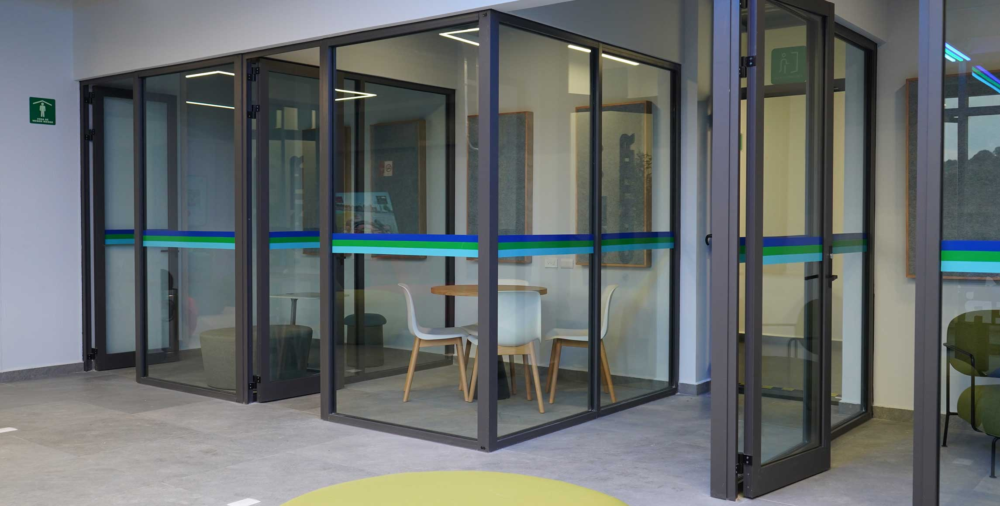

Imagen de portada
Imagen de portada
AI & Tech
AI Governance: el nuevo desafío regulatorio para las empresas mexicanas
La Inteligencia Artificial ya opera dentro de las empresas mexicanas. La pregunta incómoda es quién la gobierna.
 Gabriela L. González Vázquez
Gabriela L. González VázquezExperta en Regulación, Contratos, Technology & AI Governance. Más de 12 años construyendo soluciones legales para el futuro.

Abogada con más de 12 años de experiencia en gobernanza corporativa, inteligencia estratégica y gestión integral de riesgos. Especializada en la resolución de problemas operativos, cumplimiento normativo y fortalecimiento institucional en sectores público y privado, con aplicación de Inteligencia Artificial a procesos legales, contractuales y regulatorios.
assets/video-areas.mp4 y se reproducirá aquí, de borde a borde. Sugerido: 1080p, menos de 15 MB, sin audio.
Trayectoria profesional
Firma tech especializada en gobernanza corporativa, compliance y propiedad intelectual para nuevos modelos de negocio "tech & AI startups", con experiencia en sistemas jurídicos de Estados Unidos y Latinoamérica (Colombia, Perú y Guatemala).
Proyecto destacado: Atarraya, Inc — Legal Manager / Sector Privado (Biotecnología) / Agosto 2018 – Septiembre 2025. Responsable in-house de transacciones corporativas, laborales, propiedad intelectual y cumplimiento regulatorio en México y Estados Unidos.
Responsable in-house de las transacciones corporativas, laborales, propiedad intelectual y cumplimiento regulatorio de la empresa en México y Estados Unidos. Desarrollo de estrategias legales alineadas con las áreas financiera, operativa y de expansión, apoyando levantamiento de capital, alianzas estratégicas y crecimiento internacional.
Asesora externa del órgano garante federal en materia de auditoría de cuentas, gestión contractual, control normativo y protección de datos personales. Responsable de supervisar el cumplimiento legal, regulatorio y de propiedad intelectual conforme a la normativa aplicable.
Negociación, gestión de riesgos y administración de contratos para el sector de transformación industrial de hidrocarburos, logística y refinerías, incluyendo servicios integrales, obra pública, mantenimiento y servicios especializados. Vinculación y aplicación de políticas internas con el marco jurídico del sector energético.
Desarrollo y aprobación de reglamentos internos y normas públicas (innovación digital de KPI), elaborando y aprobando normativas internas y estándares públicos del organismo, supervisando la implementación y cumplimiento de las mismas.


"Apasionada por construir y colaborar con equipos legales e internos para mejorar procesos, siempre bajo un entorno amable, dinámico y de respeto mutuo."
— Gabriela L. González Vázquez
Las competencias que me representan
Análisis legal para la era digital
Imagen de portada
La Inteligencia Artificial ya opera dentro de las empresas mexicanas. La pregunta incómoda es quién la gobierna.
Gabriela L. González Vázquez Imagen de portada
Imagen de portada
Comparativa práctica entre el marco mexicano y el europeo, y los errores más comunes al expandirse.
Gabriela L. González Vázquez Imagen de portada
Imagen de portada
El momento exacto en que una startup debe profesionalizar su gobierno para no perder rondas de inversión.
Gabriela L. González VázquezLo que dicen quienes han trabajado conmigo
"Gabriela entendió desde el primer día los riesgos regulatorios de nuestro modelo de negocio. Su asesoría en compliance nos permitió cerrar una ronda de inversión sin contratiempos legales."
"Trabajar con Gabriela en temas de AI Governance fue clave para estructurar nuestras políticas internas antes de escalar el producto a otros países de la región."
"Su capacidad para explicar temas legales complejos de forma clara hizo toda la diferencia en la negociación de nuestros contratos internacionales."
¿Necesita asesoría legal para su empresa tech o requiere apoyo en cumplimiento normativo? Estoy aquí para ayudarle.